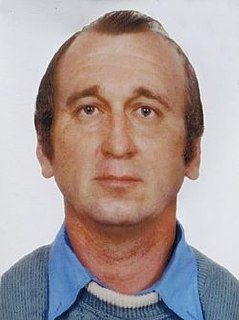
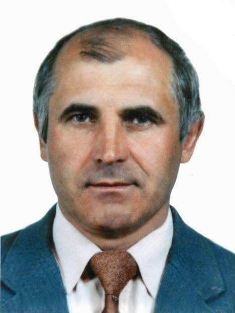
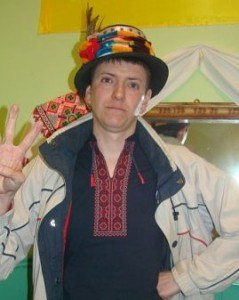

Місцевий Майдан
Перші акції на підтримку Євромайдану почалися вже 22 листопада 2013 року. На центральній площі збиралися тисячі дрогобичан; священники УГКЦ правили молебні за Україну перед Ратушею.
Листопад 2013 — Лютий 2014
Невелике місто на Львівщині, яке не залишилось осторонь. Історія про мітинги біля Ратуші, поїздки на Київ і трьох земляків, що віддали життя за гідність — Героїв Небесної Сотні.
Згадати поіменноЗміст
01 — Що це було
Восени 2013 року, після того як влада несподівано відмовилася від підписання Угоди про асоціацію з Європейським Союзом, тисячі людей вийшли на майдани по всій Україні. Те, що почалося як мирний студентський протест, після жорстокого розгону в ніч на 30 листопада переросло у всенародний рух за гідність, свободу й право самим визначати майбутнє країни.
Кульмінацією стали трагічні дні 18–20 лютого 2014 року в Києві, коли від куль снайперів загинули понад сотню протестувальників — їх назвали Небесною Сотнею. Серед них — троє чоловіків із Дрогобиччини.
«Майдан став простором, де Україна зустріла себе».
02 — Участь міста
Революція відбувалася не лише в Києві. У Дрогобичі вона мала своє щоденне обличчя — площу перед Ратушею, людей, що збиралися щовечора, і безперервний потік допомоги на столичний Майдан.
Перші акції на підтримку Євромайдану почалися вже 22 листопада 2013 року. На центральній площі збиралися тисячі дрогобичан; священники УГКЦ правили молебні за Україну перед Ратушею.
У місті сформували Першу сотню Самооборони Дрогобича імені Івана Чмоли — місцеві активісти, які чергували, тримали порядок і виїжджали на барикади столиці.
Громада безперервно збирала ліки, теплий одяг та харчі. Усе це регулярно відправляли організованими рейсами до Києва разом із активістами.
Дрогобичани раз за разом їхали на Майдан. 9 січня 2014 року близько трьохсот колядників із міста вирушили до столиці — підтримати протест піснею й присутністю.
03 — Дрогобич 2013–2014
Світлини з дрогобицьких площ часів Революції гідності. Мітинги «за Європу», студентські колони, родини з дітьми та море синьо-жовтих прапорів — місто щодня виходило на вулиці.
04 — Як це було
Уряд призупиняє підготовку до підписання Угоди про асоціацію з ЄС. Перші протести в Києві.
У Дрогобичі стартують акції на підтримку Євромайдану.
Силовий розгін студентів у Києві. Дрогобицькі священники правлять молебень за Україну перед Ратушею; місто оголошує про створення сотні Самооборони.
Близько 300 колядників із Дрогобича вирушають на Майдан до Києва.
Дрогобицький прапор з'являється на барикадах біля стадіону «Динамо».
Найкривавіші дні Революції. Снайпери розстрілюють протестувальників на вулиці Інститутській. 20 лютого гинуть троє земляків із Дрогобиччини.
Режим Януковича падає. У рідних селах ховають загиблих.
Указом Президента №890/2014 учасникам Революції, серед них трьом дрогобичанам, посмертно присвоєно звання Героя України.
05 — Небесна Сотня
Усі троє загинули в один день — 20 лютого 2014 року — від куль снайперів на вулиці Інститутській у Києві. Усім посмертно присвоєно звання Героя України.

28.04.1965 — 20.02.2014
Самооборона Майдану · с. Стебник, Дрогобиччина
Майстер деревообробки і відомий колекціонер — зібрав тисячі автографів олімпійських чемпіонів. Глибоко віруюча людина й патріот, учасник національного відродження ще з 1990-х.
Уперше приїхав на Майдан 12 грудня 2013 року, став бійцем 12-ї сотні Самооборони. Загинув уранці Кривавого четверга. Йому було 48 років. У школі села Стебник встановлено меморіальну дошку.
Герой України (посмертно)

14.03.1952 — 20.02.2014
Учасник барикад · с. Вороблевичі, Дрогобицький р-н
Електрик і будівельник, батько двох доньок. Належав до тих, для кого боротьба за Україну тривала десятиліттями: учасник Української Гельсінської спілки наприкінці 1980-х та Помаранчевої революції.
Неодноразово їздив на Майдан, а коли почалися розстріли — спеціально записався на поїздку 18 лютого 2014 року. Загинув за два дні, у віці 61 року. Похований 23 лютого в рідних Вороблевичах.
Герой України (посмертно)

20.06.1982 — 20.02.2014
Захисник барикад · м. Дрогобич
Столяр, наймолодший із трьох. На Майдані був майже від перших днів — провів там близько трьох місяців, тримаючи барикади в найгарячіших точках.
У ніч на 19 лютого був поранений в обидві ноги, але не пішов — і ще встиг винести з-під вогню пораненого побратима. Загинув уранці 20 лютого, у віці 31 року. Удостоєний звання Почесного громадянина Дрогобича.
Герой України (посмертно)
06 — Голоси очевидців
Відео-спогади одного з учасників Революції гідності з Дрогобича — пряма мова про події, у яких він брав участь особисто.
07 — Наш візит
Світлини з музею Героїв Небесної Сотні — стенди з обличчями загиблих, експозиція пам'яті та наша екскурсія до місця, де бережуть ці імена.
08 — Вшанування
Щороку 20 лютого, у День Героїв Небесної Сотні, дрогобичани сходяться на площу пам'яті — з квітами, свічками й молитвою. У місті відкрито меморіали й алею пам'яті; імена загиблих викарбувані на пам'ятних дошках навчальних закладів і в рідних селах.
Це пам'ять не про абстрактних героїв, а про сусідів, майстрів, батьків — людей, яких знали в обличчя. Дрогобич бережно тримає їхні імена, щоб наступні покоління пам'ятали ціну гідності.
Герої не вмирають.
09 — Перевірити
Матеріал спирається на відкриті документальні джерела. Деякі деталі біографій у різних публікаціях подаються неоднаково — тут наведено узгоджені факти.